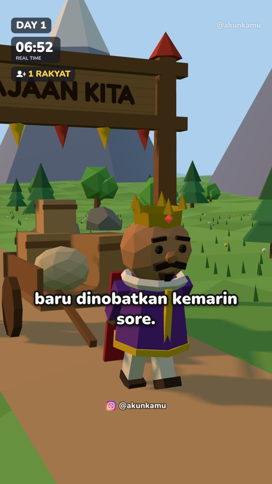
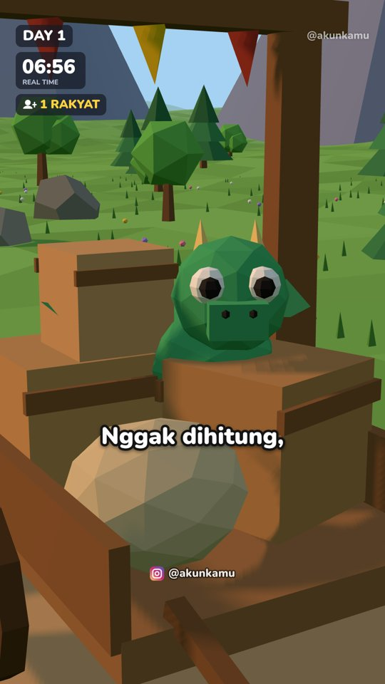
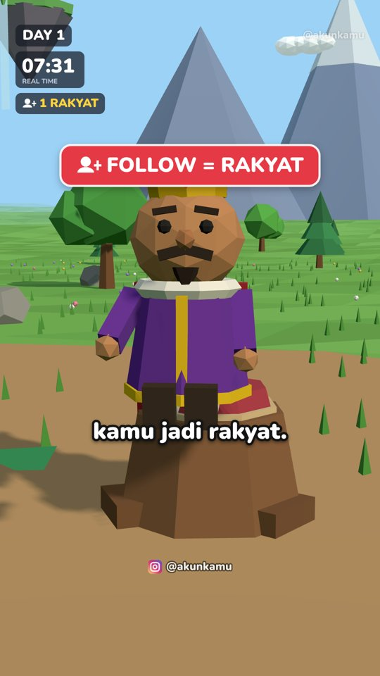
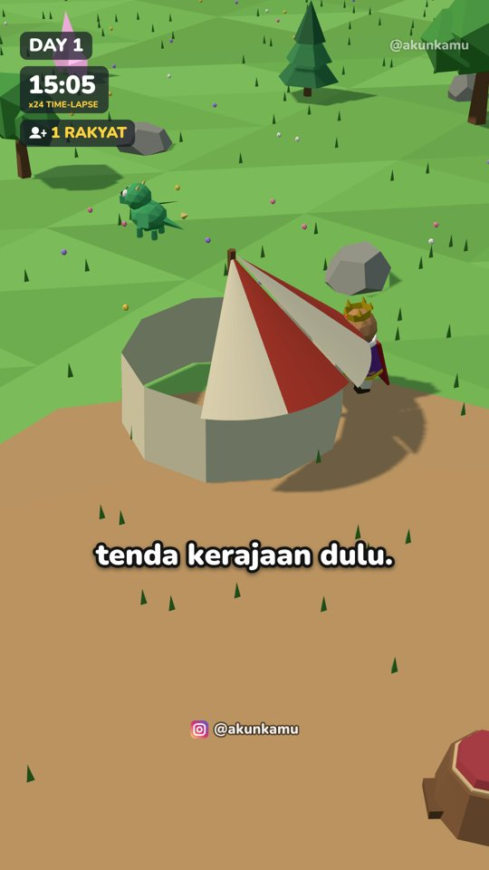
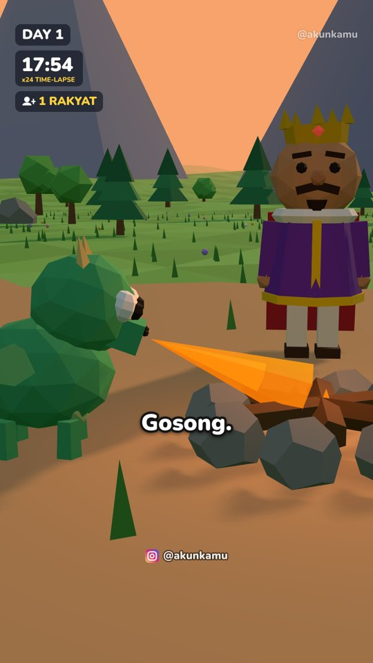
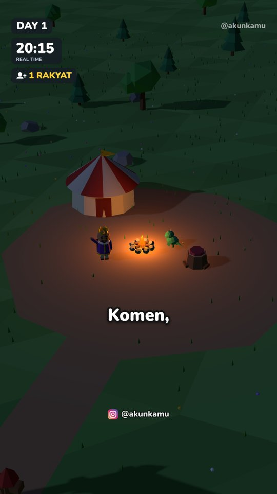
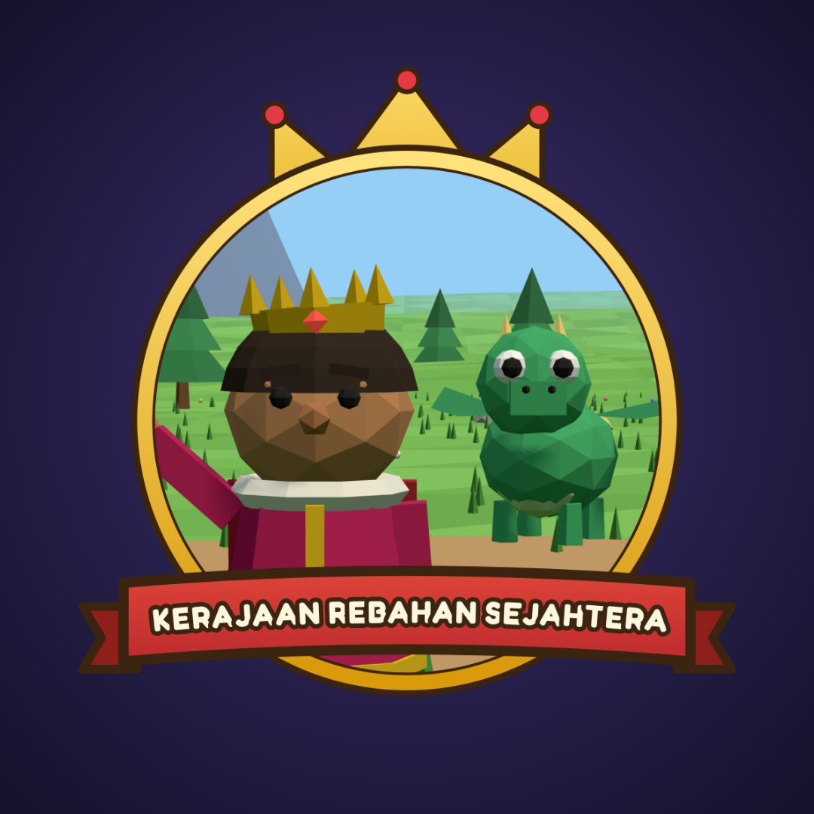
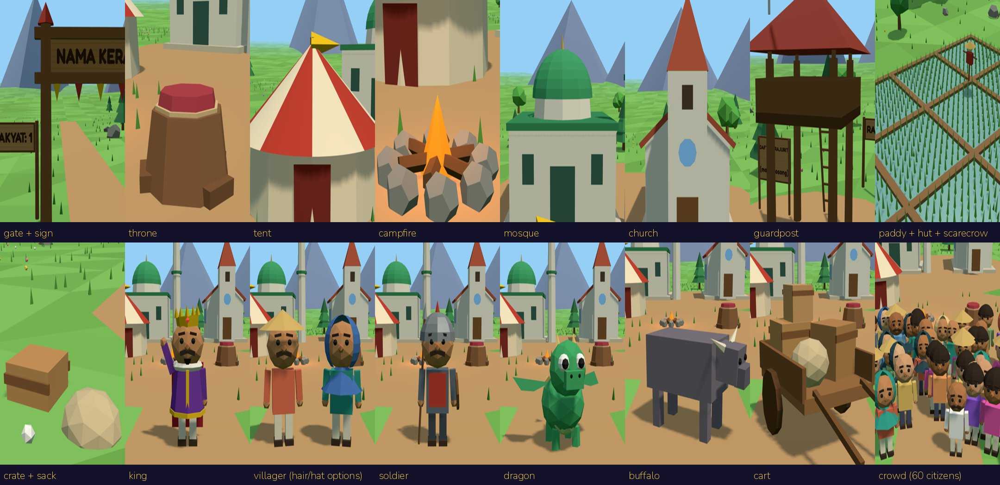

MULAI DI SINI 👋
STUDIO ANIMASI NETIZEN
Bikin video animasi 3D yang ceritanya diatur penonton.
Cukup ngobrol sama AI. Tanpa bisa edit video. Tanpa coding.






👑 Kerajaan buatanmu sendiri👥 Follow = jadi rakyat💬 Komen = dibangun besok
🎙️ Ada suara + teks + musik📱 Siap posting Reels

Kenalan dulu, yuk! 🤝
Bayangkan kamu punya teman yang jago sekali bikin film kartun. Kamu cukup bilang
"Tolong bikinkan video kerajaanku hari ke-2, rakyatnya mau sawah", lalu temanmu itu yang menggambar,
menggerakkan tokoh, mengisi suara, menulis teks, dan memberi musik. Kamu tinggal terima videonya dan posting. 🎬
Teman itu namanya Claude (sebuah AI). Paket ini adalah "studio" yang membuat Claude bisa membuat video seperti itu.
4 kata yang perlu kamu tahu (cuma 4!)
📦
File ZIPSeperti
kardus berisi studio. Kamu buka kardusnya sekali saja.
🗄️
GitHubSeperti
lemari online (gratis). Studiomu disimpan di sini, juga semua videomu.
🤖
ClaudeTeman AI yang
membuka lemari itu dan membuatkan video untukmu.
✉️
PromptPesan yang kamu
salin lalu kirim ke Claude. Sudah disiapkan semua, tinggal salin.
Cara kerjanya
📦Buka kardus (ZIP)
→
🗄️Masukkan ke lemari (GitHub)
→
🤖Claude bikin video
→
📱Kamu posting
😊 Kabar baikBagian yang agak panjang (Bagian 1) cuma dilakukan sekali, kira-kira 30 menit.
Setelah itu, setiap video baru cukup 1 pesan ke Claude.
Yang kamu butuhkan
- Langganan Claude berbayar (Pro atau Max) dari claude.ai. Versi gratis tidak bisa. Pro sudah cukup.
- Akun GitHub. Gratis, kita buat bersama di Langkah 2.
- Laptop atau komputer dengan Chrome untuk persiapan pertama. Setelah itu bisa pakai HP.
- Akun Instagram untuk posting videonya.
BAGIAN 1 · CUKUP SEKALI SEUMUR HIDUP
Siapkan studiomu 🛠️
Isi kardusmu 📦
| Nama file | Apa itu? |
|---|
| MULAI DI SINI.pdf | Buku panduan ini 📖 |
| Studio-Animasi-Netizen.zip | Kardus studionya. Kamu tidak perlu membuka file-file di dalamnya, kecuali folder prompts. |
1
Buka kardusnya (ekstrak ZIP)
- Cari file Studio-Animasi-Netizen.zip di folder Download laptopmu.
- Windows: klik kanan file itu → pilih Extract All… → klik Extract.
Mac: klik dua kali file itu.
- Sekarang ada folder bernama Studio-Animasi-Netizen. Buka folder itu.
✅ Berhasil kalau…di dalam folder kamu melihat CLAUDE.md, README.md, dan folder-folder seperti prompts, engine, docs.
2
Buat akun GitHub (lemari online gratis)
- Buka github.com lalu klik Sign up.
- Isi email, password, dan username (nama bebas, contoh: budistudio).
- GitHub mengirim kode ke emailmu. Buka emailmu, lalu ketik kodenya.
- Kalau ditanya macam-macam (mau dipakai untuk apa, dll.), pilih apa saja atau lewati. Pakai yang gratis (Free).
💡 Sudah punya akun GitHub?Cukup masuk (Sign in), lalu lanjut ke Langkah 3.
3
Buat "laci" untuk studiomu (repository)
- Di github.com, klik tanda + di pojok kanan atas → pilih New repository.
- Di kotak Repository name, ketik: studio-animasi
- Pilih Private (supaya hanya kamu yang bisa melihat).
- Nyalakan Add README (di tampilan lama: centang Add a README file).
- Klik tombol hijau Create repository.
github.com/new
Create a new repository
Repository name: studio-animasi
◯ Public ◉ Private
☑ Add README
Create repository ← klik
4
Masukkan isi kardus ke laci (upload)
- Di laci barumu (studio-animasi), klik Add file → Upload files.
- Buka folder Studio-Animasi-Netizen di laptopmu. Klik satu file, lalu tekan
Ctrl + A (Windows) atau Cmd + A (Mac) supaya semua terpilih.
- Seret (drag) semua yang terpilih ke kotak upload di Chrome. Tunggu sampai semua nama file muncul di daftar.
- Gulir ke bawah, klik tombol hijau Commit changes. ("Commit" artinya simpan.)
github.com/…/studio-animasi/upload
📂 ➜ Seret semua file & folder ke sini
Commit changes ← klik setelah semua muncul
✅ Berhasil kalau…halaman lacimu sekarang menampilkan CLAUDE.md, prompts, engine, … langsung di daftar.
⚠️ Yang sering terjadiKalau yang terupload malah satu folder bernama Studio-Animasi-Netizen, tidak apa-apa. Nanti Claude yang merapikannya sendiri.
5
Kenalkan Claude dengan lemarimu (hubungkan GitHub)
- Buka claude.ai/code dan masuk dengan akun Claude berbayarmu.
- Claude akan meminta kamu menghubungkan GitHub. Klik tombolnya (bisa bertuliskan Connect GitHub
atau Sign in with GitHub), lalu klik setuju (Authorize) di halaman GitHub yang terbuka.
- Karena lacimu Private, Claude perlu izin khusus. Kalau Claude menawarkan memasang Claude GitHub App, terima.
Kalau tidak ditawarkan: buka github.com/apps/claude → Install (atau Configure)
→ pilih akunmu → Only select repositories → pilih studio-animasi → Install.
💡 TipsKalau nanti lacimu tidak muncul di Claude, 99% masalahnya di langkah ini: pastikan Claude GitHub App diizinkan untuk studio-animasi.
6
Buka pintu internet (supaya ada suara)
Komputer Claude di internet awalnya hanya boleh membuka sedikit situs. Suara narator butuh situs tambahan, jadi kita buka pintunya:
- Di halaman claude.ai/code, lihat di bawah kotak pesan: ada tulisan nama environment (biasanya Default).
- Klik itu, lalu pilih edit (ikon pensil / pengaturan) pada Default.
- Cari Network access → pilih Full.
- Klik Save changes.
Edit environment
Name: Default
Network access: ◯ None ◯ Trusted ◉ Full ◯ Custom
Save changes
🎉 Selesai!Bagian paling panjang sudah lewat. Kamu tidak perlu mengulang Bagian 1 lagi.
BAGIAN 2
Video pertamamu 🎬
7
Mulai ngobrol dengan Claude
- Di claude.ai/code, klik pilihan repository di bawah kotak pesan → pilih studio-animasi.
- Biarkan pilihan di sebelahnya tetap main, dan environment tetap Default (yang tadi kamu buat Full).
- Kalau ada pilihan mode, pilih Auto. Kalau tidak ada Auto, pilih Accept edits. Jangan pilih Plan.
8
Kirim pesan pertama
Buka file prompts/1_MULAI.txt (di laptop atau di GitHub), salin tulisannya, tempel di kotak pesan Claude, lalu kirim:
Halo Claude! Ini proyek Studio Animasi Netizen milikku. Tolong ikuti petunjuk di file CLAUDE.md:
cek semuanya berjalan dan buatkan video tes yang pendek, lalu bantu aku membuat dunia animasiku yang pertama.
Aku tidak mengerti teknis, jadi tolong kerjakan semua langkah teknis untukku dan balas dengan kalimat yang singkat dan mudah.
Kamu boleh menyimpan semuanya langsung ke branch main di proyek GitHub-ku.
Claude akan memasang semuanya sendiri (2–6 menit), lalu mengirim video tes 8 detik. Kalau kamu dengar raja berkata
"Halo! Studio animasimu sudah siap", berarti studiomu sudah jadi. 🥳
😟 Kalau Claude bilang "layanan suara tidak bisa dihubungi"Langkah 6 belum tersimpan. Ulangi Langkah 6 (Network access = Full, Save), lalu ketik coba lagi.
9
Ceritakan kerajaanmu
Claude akan bertanya 3 hal. Jawab saja dengan kata-katamu sendiri. Contoh:
🤖 Nama kerajaanmu apa? Akun Instagram-mu? Pemimpinnya Raja atau Ratu? Nama hewannya?
🙂 Kerajaan Rebahan. Akunku @kerajaanrebahan. Pemimpinnya Raja. Hewannya naga namanya Gosong.
Bingung? Balas saja "terserah kamu". Ide-ide nama ada di prompts/6_IDE_TEMA.txt.
Claude lalu membuat Day 1 (kira-kira 15–30 menit). Kamu boleh menutup halaman dan kembali nanti. Claude tetap bekerja.
📥 Cara mengambil videonya
Dari chat: Claude mengirim video + cover + caption. Klik videonya → unduh.
Dari GitHub: github.com → studio-animasi → folder videos → klik video → tombol unduh (panah ↓, kanan atas).
Di HP: buka videonya → tombol Bagikan / Simpan → masuk galeri → posting ke Instagram.
👀 Nanti obrolanmu kira-kira seperti ini
🙂 (kamu menempel pesan 1_MULAI)
🤖 Siap! Lagi aku cek dan pasang semuanya… ±5 menit.
🤖 ✅ Studiomu sudah jalan! Ini video tesnya 🎬. Sekarang kasih tahu aku nama kerajaanmu, akun Instagram-mu, Raja atau Ratu, dan nama hewannya.
🙂 Kerajaan Rebahan, @kerajaanrebahan, Raja, naganya Gosong.
🤖 Oke! Lagi bikin Day 1… ±20 menit.
🤖 🎉 Day 1 sudah jadi! Ini video, cover, dan caption-nya. Kalau sudah ada komentar, kirim jumlah follower + komentar teratas untuk Day 2.
⏳ Sabar yaSelama Claude bekerja, kamu akan melihat banyak tulisan aneh lewat di layar. Itu normal, abaikan saja. Kamu cukup menunggu pesan dari Claude.
BAGIAN 3 · SETIAP HARI
Bikin Day berikutnya 🔁
Inilah "rahasia" kontennya: penonton yang menentukan isi videomu. Setiap follower menjadi rakyat, dan komentar dengan like terbanyak dibangun besok.
Orang jadi semangat follow dan komen karena namanya bisa muncul di video.
📱Posting Day 1
→
💬Orang follow & komen
→
📸Kamu screenshot komentar teratas
→
🤖Kirim ke Claude
→
🎬Day 2 jadi!
A
Kumpulkan 2 hal dari Instagram
- Jumlah follower: lihat angka di profilmu (contoh: 581).
- Komentar teratas: buka video kemarin, lalu screenshot 3–5 komentar yang like-nya paling banyak.
B
Kirim ke Claude
Buka chatmu di claude.ai/code (atau aplikasi Claude di HP → Code). Chat yang sama paling bagus.
Chat baru dengan studio-animasi juga boleh, karena semuanya sudah tersimpan. Salin dari prompts/3_DAY_BERIKUTNYA.txt,
ganti angkanya, lalu lampirkan screenshot-nya:
Buatkan Day berikutnya untuk dunia Kerajaan Rebahan.
Jumlah follower sekarang: 581
Ini komentar teratasnya (screenshot terlampir). Bangun usulan dengan like terbanyak, dan sebutkan nama pengusulnya di video.
Kamu boleh menyimpan semuanya langsung ke branch main.
Claude akan membuat papan "RAKYAT" naik ke 581, menampilkan nama pengusul dengan gelar Penasihat Raja,
membangun usulannya dalam timelapse, menambahkan lelucon, lalu mengajak orang follow dan komen lagi.
💡 Usulan aneh-aneh?Tenang. Kalau bangunan yang diminta belum ada di studio (misalnya "sekolah sihir"), Claude bisa membuatkan bangunan baru sendiri.
BAGIAN 4
Posting yang benar 📲
🏆 Sistem pangkat (bikin orang makin semangat)
| Pangkat | Caranya | Hadiah di video |
|---|
| 👥 Rakyat | Follow | Ikut dihitung di papan RAKYAT |
| 💬 Penasihat Raja | Komentar dengan like terbanyak | Usulannya dibangun + namanya muncul |
| 🛡️ Prajurit | Kirim gift | Nama di papan "Daftar Prajurit" |
| ⚔️ Ksatria / Panglima | Dukungan lewat link donasi | Prajurit bernama / bangunan pakai namanya |
| Lakukan ini | Kenapa? |
|---|
| Pakai gambar cover buatan Claude (videos/…-cover.jpg) | Profilmu jadi rapi dan orang penasaran ingin klik. |
| Tempel caption buatan Claude (…caption.txt) | Sudah ada ajakan follow, komen, dan hashtag. |
| Sematkan (pin) komentar: "Komen usulanmu di sini 👇" | Orang langsung tahu harus komen apa. |
| Posting setiap hari di jam yang sama (11.00–13.00 atau 18.00–21.00) | Penonton menunggu kelanjutannya. |
| Nyalakan label "Dibuat dengan AI" di Instagram | Suaranya buatan AI. Instagram meminta label ini. |
✍️ Bio Instagram (contoh, tinggal ganti)
👑 Kerajaan ini dibangun dari komen
👥 Follow = jadi rakyat
💬 Usulan like terbanyak, besok dibangun
🎁 Gift = naik pangkat
🎨 Logo & foto profilMinta ke Claude: "Bikinin logo untuk kerajaanku." Kamu akan dapat logo bulat bermahkota + foto profil Instagram yang pas.
BAGIAN 5
Mau ubah sesuatu? Bilang aja! 🗣️
Kamu tidak pernah perlu mengubah file. Cukup ketik keinginanmu ke Claude. Contoh (lebih banyak di prompts/4_UBAH_SESUATU.txt):
Suara rajanya bikin lebih berat dan lebih pelan.
Ganti pemimpinnya jadi Ratu, bajunya warna hijau.
Videonya kepanjangan, bikin jadi sekitar 50 detik.
Di detik ke-20 tulisannya menutupi muka raja, tolong perbaiki.
Tambahkan lelucon: naganya takut sama ayam.
Bikinin bio Instagram untuk akunku.
Yang bisa ditampilkan studio ini

Gerbang & papan nama, singgasana, tenda kerajaan, api unggun, masjid, gereja, pos jaga, sawah + saung, raja/ratu, rakyat (60 orang beragam),
prajurit, naga, kerbau, gerobak. Langit pagi–siang–sore–malam ikut jam di video. Bangunan baru bisa dibuatkan Claude.
BANTUAN
Ada masalah? Tenang 😌
Aturan emas: ceritakan ke Claude apa yang kamu lihat, pakai kata-katamu sendiri. Claude bisa memperbaiki hampir semuanya.
Pesan siap salin ada di prompts/5_KALAU_ADA_MASALAH.txt.
| Yang kamu lihat | Yang kamu lakukan |
|---|
| "Layanan suara tidak bisa dihubungi" / soal network | Langkah 6: Network access = Full → Save → ketik coba lagi. |
| Lacimu tidak muncul di Claude | Langkah 5: izinkan Claude GitHub App untuk studio-animasi, lalu muat ulang halaman. |
| Claude minta upgrade / Code tidak tersedia | Kamu perlu langganan Pro atau Max. |
| "You've reached your usage limit" | Jatah pemakaianmu sedang habis. Tunggu sampai jam yang ditunjukkan, lalu ketik lanjutkan. |
| Claude berhenti di tengah | Ketik: Lanjutkan dari yang tadi ya. |
| Videonya tidak ketemu | GitHub → studio-animasi → videos. Atau ketik: Kirim ulang videonya. |
| Ada yang salah di video | Bilang detik dan masalahnya: "Di detik 0:20 tulisannya menutupi muka raja." |
| Claude bilang ada yang "diblokir"/"ditolak" | Balas: Aku izinkan. Silakan lanjut. |
| Claude bertanya hal teknis | Balas: Aku tidak paham teknis, tolong kamu yang putuskan. |
Pertanyaan yang sering ditanya
Harus bisa coding atau edit video?
Tidak. Kamu cuma salin, tempel, dan ngobrol.
Berapa lama bikin 1 video?
Kira-kira 15–30 menit. Claude yang bekerja, kamu tinggal menunggu.
Ada biaya lagi per video?
Tidak ada biaya tambahan. Studio ini memakai jatah langganan Claude-mu. Suara, musik, dan font gratis.
Videonya boleh dimonetisasi?
Boleh. Video buatanmu milikmu. Ikuti aturan Instagram (termasuk label AI).
Musiknya aman dari copyright?
Aman. Musik dan efek suara dibuat sendiri oleh studio, bukan diambil dari lagu orang.
Bisa dari HP saja?
Persiapan pertama (Bagian 1) sebaiknya pakai laptop. Setelah itu bisa dari aplikasi Claude di HP → Code.
Kamus kecil 📚
| Claude | Asisten AI buatan Anthropic. Kamu memakainya di claude.ai. |
| claude.ai/code | Bagian Claude yang bisa "bekerja di komputer online". Disebut juga Claude Code. |
| GitHub | Lemari online gratis untuk menyimpan proyek. |
| Repository | Satu laci di lemari GitHub. Punyamu bernama studio-animasi. |
| Commit | Bahasa GitHub untuk "simpan". |
| Environment | Pengaturan komputer online Claude. Kamu cukup mengatur Network access = Full sekali saja. |
| Prompt | Pesan yang kamu kirim ke Claude. |
| Day | Satu episode / satu video harian. |
✅ Daftar centang (biar tidak ada yang terlewat)
- Kardus (ZIP) sudah dibuka
- Akun GitHub sudah jadi
- Laci studio-animasi sudah dibuat (Private)
- Semua file sudah di-upload dan di-Commit
- Claude sudah terhubung dengan GitHub
- Network access sudah Full
- Pesan 1_MULAI.txt sudah dikirim, dan video tes sudah keluar
- Day 1 sudah jadi dan diposting 🎉
📜 Hal penting
Lisensi: kamu boleh memakai studio ini untuk membuat video sebanyak-banyaknya, untuk akun pribadi maupun komersial. Mohon jangan membagikan atau menjual ulang paket ini.
Suara narator memakai layanan text-to-speech online gratis dari Microsoft (lewat alat open-source edge-tts), jadi butuh internet dan tergantung ketersediaan layanan tersebut.
Musik dan efek suara dibuat oleh studio sendiri. Font Nunito dan Fredoka berlisensi SIL Open Font License.
Claude dan Claude Code adalah merek dagang Anthropic. GitHub adalah merek dagang GitHub, Inc. Produk ini adalah produk independen dan tidak berafiliasi dengan mereka.
3 langkah berikutnya
1) Kerjakan Bagian 1 sekali. 2) Kirim pesan 1_MULAI. 3) Ceritakan kerajaanmu, lalu posting Day 1. Semangat! 👑